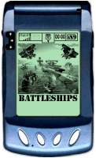
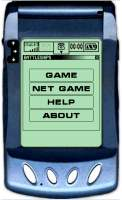
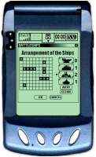
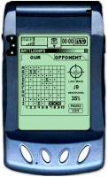
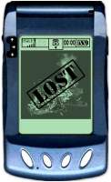

In 2001 I took a part in very interesting project called "Battleships", the project was organized by Swedish company "Gamefederation" and the purpose of the project was to show in E3 2001 the strong sides of the game server developed by the company for inter-platform game session management (lately the platform got name GEX). During demo game session a user of Motorola A008 mobile phone should organize game session with a user of PC. I didn't have any experience in mobile development and about J2ME in that time but the project looked very interestingly especially because it was a client-server project included a mobile device with innovative GPRS technology and sensor screen.
The International team included listed persons:
We had only 3 months for implementation of the project and our artists made great design work for unique attractive design of PC version, then I made more easier design for mobile device. The Project was completed in time and it was successful in its show in E3 2001.
The GEX platform was Java based platform and games were presented on server side as executable modules working in server container. The PC client for the game was written in C++ and worked under Windows 98 + DirectX, but its GEX component was developed in Java and communicated with C++ code through JNI. We used HTTP protocol for communications, it is interesting moment that in that time I developed some similar to Comet protocol and Markus even told me that it was very good idea.





To develop the mobile client was no so easy because the only mobile phone exemplar was in Stockholm Motorola laboratory and I didn't have any chance to take a look at it, so I developed in blind mode and our Swedish team visited the laboratory to check how it works on the real device. The Mobile phone was very innovative, 16 grey levels, touch screen, GPRS. I have not ever seen the game working on real device, several months later I saw only several photos of the game process in a Swedish online magazine dedicated to mobile technologies.